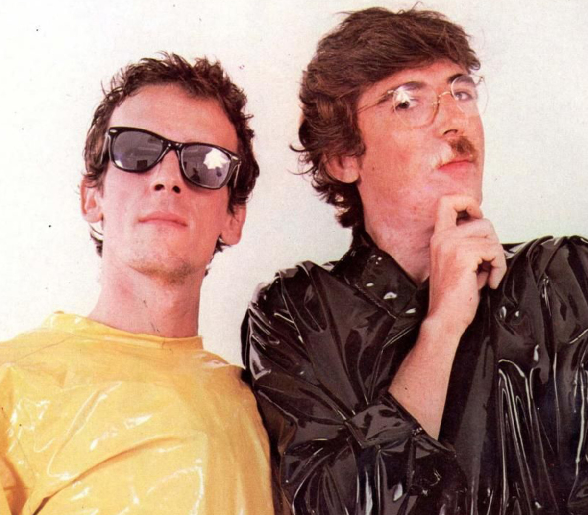

Aunque Spinetta fue un artista profundamente personal, también
supo rodearse de músicos con los que compartía sensibilidad y
búsqueda artística. A lo largo de su carrera, participó en
múltiples proyectos junto a figuras clave del rock argentino y
latinoamericano, siempre desde un lugar de respeto, admiración y
generosidad creativa.
“La la la” con Fito Páez (1986)
Uno de los hitos más importantes de su carrera colaborativa fue
el disco "La la la", realizado junto a Fito Páez. Este álbum
fusionó dos estilos muy diferentes pero complementarios: la
lírica filosófica de Spinetta y la emocionalidad melódica de
Páez. El resultado fue una obra profunda, ecléctica y bellísima
que capturó un momento único en la música argentina.
+
Encuentros con Charly García
La relación artística entre Spinetta y Charly García fue tan
fuerte como esporádica. Aunque no grabaron un álbum conjunto,
compartieron escenario en momentos memorables. El más recordado
fue durante el concierto "Spinetta y las Bandas Eternas" (2009),
donde interpretaron juntos clásicos que emocionaron a
generaciones. Fue un encuentro simbólico entre dos gigantes de
la música nacional.

Otras colaboraciones y legado compartido
A lo largo de su vida, Spinetta sumó su talento a los proyectos
de numerosos artistas: desde Pedro Aznar, Litto Nebbia y Claudio
Gabis, hasta grupos más modernos como Illya Kuryaki and the
Valderramas. Incluso con músicos jóvenes, mostró una apertura
admirable, aportando desde un lugar genuino y sin protagonismo.
Cada colaboración fue una muestra de su compromiso con el arte y
la música como lenguaje colectivo.
Un puente entre artistas
Luis Alberto Spinetta entendía la música como un puente, una
forma de conexión entre sensibilidades distintas. Por eso, sus
colaboraciones no fueron simples cruces de nombres: fueron
encuentros reales, humanos y profundos. Esa apertura, sumada a
su talento inmenso, convirtió cada proyecto compartido en una
obra valiosa y única.
 +
+